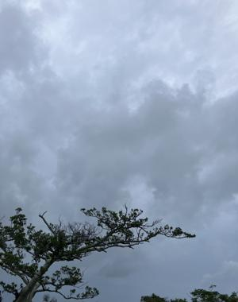

うるがいの話 ある日
最新: 縄跳び２０回【うるがいの話 ある日】とは 一日だけのプログです
『うるがいの話』の最新一日だけのプログで、通信料が少なく経済的だ。カニの画像をクリックすると全ての日付が載る『うるがいの話』サイトを表示します
|
|
【うるがいの話】 うるがい(ｳﾙｶﾞｲ urugai)とは、『もずくがに』の名前でとても大きくなります。 |
|---|---|
|
|
【カミマヤーの話】 猫のことを方言でマヤーといいます。カミマヤー（kamimayaa）とは、神の猫のことです。 |
|
【たながぁの音楽】 たながぁ（ﾀﾅｶﾞｰ tanagaa）とは手長えびのことで、何種類かあり大きいのは車 エビぐらいになります。 |

|
【ぶながぁの話】 ぶながぁ(ﾌﾞﾅｶﾞｰ bunagaa)とは、赤い髪の毛、赤い身体、そして身長は１ｍ２０ｃｍ ぐらい、川の蟹を食べているの目撃された。場所は沖縄県国頭郡大宜味村のと ある村僕の隣近所に住んでいる爺さんから、聞いた話です。 |
|
|
【ギーマの話】 ギーマ(giima)とは、山原の里山に咲くスズランに似た、 花を付けます。実は食べられます、 気が付くと口の周りが紫になっています。 |
2024年10月26日 (土）縄跳び２０回
15:50

信じられない！、縄跳びが２０回までしか続くかない。この前テレビで
高血圧予防で、ジャンプ１０回が効くとあった。フーン、ただ飛ぶので
は面白くないと、なわとびをスポーツ店から購入。さーてと、飛んでみ
た。え！、一回もできない、頭と体が一致しない。焦る、そのうち数回
出来るようになったものの、２０回止まり。運動不足の浪人生活時代に
アパートの屋上で、縄跳びをして住居人からうるさいと苦情された経験
もあるのに。
那覇市保健所健康増進課から、大切なお知らせです。必ずご覧ください
。と特定検診の３年分の結果が、そして血圧が赤！！！（治療している
のに、令和４が８４、令和５年が７０、令和６年８月７日が赤９０）、
保健所窓口に来てね！と。
水２リットルは、特定検診の日から、バタフライピーティーは９月７日
から初めているものの、効果があるのかよく分からない。そしてジャン
プ１００回（できれば、縄跳びを百回）しばらく続けるとする。
本日のバタフライピーの花６つ収穫。
１５時４３分 ビットコインの総資産 ￥２９、６３２（↓２１９）